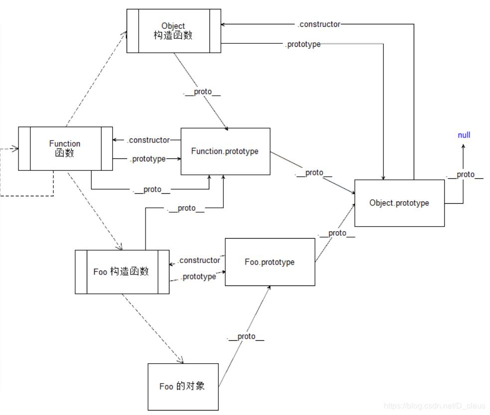

JS原型链
const foo = new Foo();1
2
3
4
5
6
7
8
9
10
11
12
13
14
151. foo.__proto__ === Foo.prototype
2. Foo.prototype.constructor === Foo
3. Foo.prototype === Foo.prototype // 左边指的是Foo这一对象(也是一个函数)的一个属性，右边指的是一个具体的对象，即‘Foo的原型对象’
4. Foo.__proto__ === Function.prototype // 右边指的是JS内置对象Function的原型对象
5. Foo === new Function('函数的定义语句字符串');
6. Function.prototype.construction === Function
7. Function.prototype === Function.prototype
8. Function.__proto__ === Function.prototype // 所以函数的__proto__属性都指向Function.prototype，包括Function自己
9. 对象Object.prototype.constructor === 函数Object()
10. 函数Object().prototype === Object.prototype
11. 函数Object().__proto__ === Function.prototype
12. Function.prototype.__proto__ === Object.prototype
13. Foo.prototype.__proto__ === Object.prototype
14. Object.prototype.__proto__ === null
